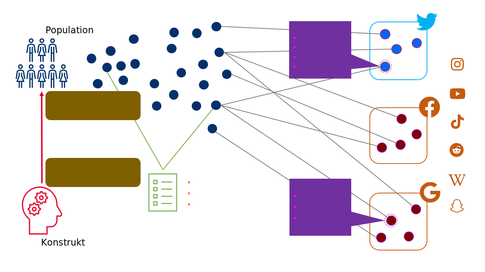
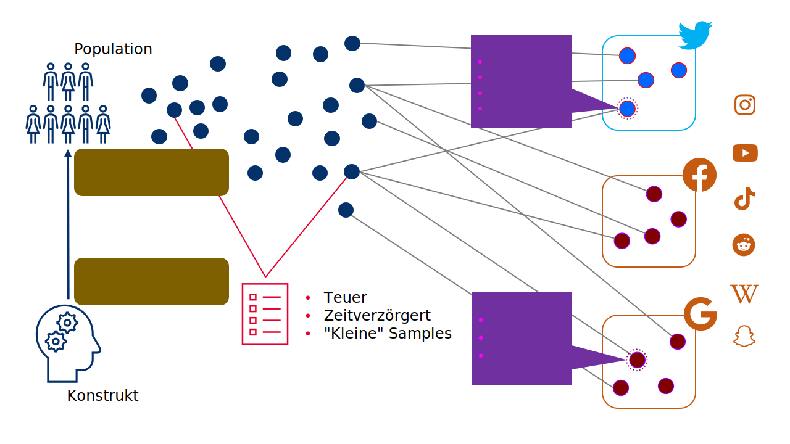
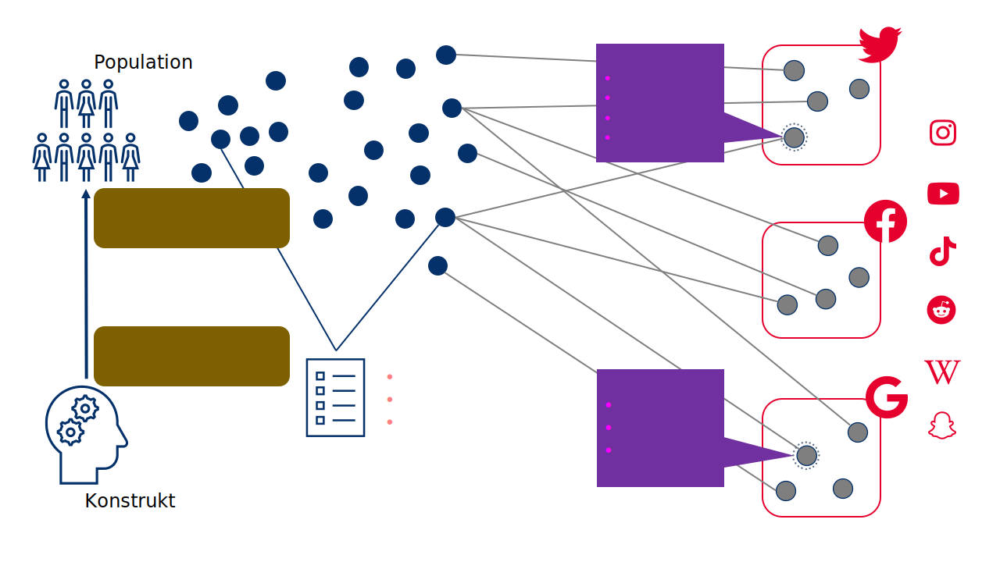

| Gruppe | Thema | Studierende |
|---|---|---|
| 1 | Motivation der Nutzung von Twitch | Azat, Heimstädt |
| 2 | Kommunikation und Interaktion auf Twitch | Burmeister, Fischer, Erdogmus |
| 3 | (Wirkungs-)Effekte der Twitch-Nutzung/Interaktion | Dierking, Reineke |
| 4 | (Wirkungs-)Effekte von TV-Wahldebatten | Spickenreuther, Wolf |
| 5 | Wechselwirkung zwischen TV-Debatten und Twitter | Gierth, Landgraf |
| 6 | Live-Chat(-Kommentare) in politischen Debatten | Mach, Stadler, Weiß |
Überblick & Einführung
Session 02
30.10.2024
Agenda
Organisation & -koordination
Kurzes Update, Gruppenaufteilung & Semesterplan
Kurzes Update
Allgemeine Infos zum Kurs
Haben alle sich für die Prüfung angemeldet? Gibt es noch Fragen zum Sonderanmeldetermin?
Haben alle eine Benachrichtung für den Post im
StudOn-Forum bekommen?
Haben alle die 📖 Basisliteratur gefunden? Gibt es Fragen?
Präsentationsgruppe 1&2: Denkt bitte an die Zusendung des Entwurf der Präsentationsfolien (bis nächsten Dienstag bis 12:00) und das Feedbackgespräch nächste Woche!
Finale Themenvergabe
Überblick über die Gruppenverteilung
Semsterplan
| Session | Datum | Topic | Presenter |
|---|---|---|---|
| 📂 Block 1 | Introduction | ||
| 1 | 23.10.2024 | Kick-Off | Christoph Adrian |
| 2 | 30.10.2024 | DBD: Overview & Introduction | Christoph Adrian |
| 3 | 06.11.2024 | 🔨 Introduction to working with R | Christoph Adrian |
| 📂 Block 2 | Theoretical Background: Twitch & TV Election Debates | ||
| 4 | 13.11.2024 | 📚 Twitch-Nutzung im Fokus | Student groups |
| 5 | 20.11.2024 | 📚 (Wirkungs-)Effekte von Twitch & TV-Debatten | Student groups |
| 6 | 27.11.2024 | 📚 Politische Debatten & Social Media | Student groups |
| 📂 Block 3 | Method: Natural Language Processing | ||
| 7 | 04.12.2024 | 🔨 Text as data I: Introduction | Christoph Adrian |
| 8 | 11.12.2024 | 🔨 Text as data II: Advanced Methods | Christoph Adrian |
| 9 | 18.12.2024 | 🔨 Advanced Method I: Topic Modeling | Christoph Adrian |
| No lecture | 🎄Christmas Break | ||
| 10 | 08.01.2025 | 🔨 Advanced Method II: Machine Learning | Christoph Adrian |
| 📂 Block 4 | Project Work | ||
| 11 | 15.01.2025 | 🔨 Project work | Student groups |
| 12 | 22.01.2025 | 🔨 Project work | Student groups |
| 13 | 29.01.2025 | 📊 Project Presentation I | Student groups (TBD) |
| 14 | 05.02.2025 | 📊 Project Presentation & 🏁 Evaluation | Studentds (TBD) & Christoph Adrian |
An Abundance of Possibilities
Die Stärken von Digital Behavioral Data
Was ist das eigentlich?
Rückblick auf einen Definitionversuch von Weller (2021)
… fasst eine Vielzahl von möglichen Datenquellen zusammen, die verschiedene Arten von Aktivitäten aufzeichnen (häufig sogar “nur†als Nebenprodukt)
… können dabei helfen, Meinungen, Verhalten und Merkmale der menschlichen Nutzung digitaler Technologien zu erkennen

Und im Kontext des Seminars?
Arbeitsdefinition & Kernbereiche (GESIS) von DBD
- DBD umfasst digitale Beobachtungen menschlichen und algorithmischen Verhaltens,
- wie sie z.B. von Online-Plattformen (wie Google, Facebook oder dem World Wide Web) oder
- Sensoren (wie Smartphones, RFID-Sensoren, Satelliten oder Street View-Kameras) erfasst werden.
Die Power von Social Sensing
Forschungsdesign zur Erhebung digitaler Verhaltensdaten (Flöck & Sen, 2022)






Mit Fokus auf die Platform
Forschungsdesign zur Erhebung digitaler Verhaltensdaten (Flöck & Sen, 2022)

Online-Plattformen prägen die Gesellschaft
Gründe für den Fokus auf Onlineplattformen (Ulloa, 2021)
vermitteln & formen menschliche Kommunikation (z.B. Tweet mit 280 Zeichen)
politische (Miss-)Nutzung
Gatekeeper für Informationen (z.B. “Dr.Google”)
tägliche algorithmische Empfehlungen und Werbung: Nachrichten, Produkte, Jobangebote, Bewerbungen, Versicherungen, Hotels, …
ABER: Berücksichtigung der Art und Weise, wie die Daten gesammelt werden!
Eine kleine Lobeshymne auf DBD
Zwischenfazit
Digitale Geräte oder Sensoren können sich an bestimmte Fakten besser “erinnern†als das menschliche Gedächtnis.
Sensoren sind oft bereits in alltägliche Technologie eingebaut und produzieren digitale Verhaltensdaten als ein “Nebenprodukt”.
Unaufdringliche Erfassung als potentieller Vorteil bzw. Entlastung für Teilnehmer*Innen
Kombination mit Umfragedaten möglich (und bereichernd!)
Aber: Berücksichtigung der Rahmenbedingungen!
Zur erfolgreichen Nutzung müssen Forschungsziele & verfügbare Daten in Einklang gebracht, mögliche Biases und methodische Probleme berücksichtigt sowie die Datenqualität evaluiert werden.
Herausforderungen von DBD
Potentielle Biases & ethische und rechtliche Faktoren
Wenn der Vorteil zum Nachteil wird
Ambivalenz der Unaufdringlichkeit (Engel et al., 2021)
Unterscheidung zwischen aufdringlichen (z.B. spezielle Research-App & Befragungen) & unaufdringlichen (z.B. Cookies, Browserplugins & APIs) erhobenen Daten
Bewertung und Erwartung an Datensammlung ist abhängig vom Kontext (z.B. Amazon vs. Researchgate)
Paradoxes Dilemma
Einerseits bereitwillige (oft unwissende) Abgabe der Daten an Konzerne ohne Wissen um deren Weiterverarbeitung, andererseits häufig Bedenken bezüglich Datenschutz & Privatsphäre bei wissenschaftlichen Studien, die über Verwendung der Daten aufklären.
Eher Konzept als Begriff
Zur Ambigutität des Begriffes bias und dessen Bedeutung im Seminar
- Problem: keine klare Grenzen zwischen den eher normativen Konnotationen (z.B. confirmation bias) und der statistischen Bedeutung des Begriffs (z.B. selection bias)
- Deswegen: Bewusstsein für Ambiguität des Begriffes
- Verwendung in vielen Disziplinen wie der Sozialwissenschaft, der kognitiven Psychologie oder dem Recht
- Untersuchung von verschiedenen Phänomenen, wie kognitive Voreingenommenheiten (Croskerry, 2002) sowie systemische, diskriminierende Ergebnisse (Friedman & Nissenbaum, 1996) oder Schäden (Barocas & Selbst, 2016), aktuell z.B. bei der Verwendung von Machine Learning oder AI.
Verwendung des Begriff hauptsächlich in seiner statistischen Bedeutung, um auf Verzerrungen in sozialen Daten und deren Analysen hinzuweisen.
Know your bias!
Framework zur Minimierung von Fehlern und Problemen (Olteanu et al., 2019)

The biggest problem of them all
Potentielle Probleme mit der Qualität der Daten
Definition Data bias (Olteanu et al., 2019)
A systematic distortion in the sampled data that compromises its representativeness.
Sparsity: Häufig Heavy-Tail-Verteilung, was Analyse am “Kopf†(in Bezug auf häufige Elemente oder Phänomene) erleichtert, am “Schwanz†(wie seltene Elemente oder Phänomene) jedoch erschwert (Baeza-Yates, 2013)
Noise: Unvollständige, beschädigte, unzuverlässige oder unglaubwürdige Inhalte (boyd & Crawford, 2012; Naveed et al., 2011)
- Aber: Unterscheidung von “Noise†und “Signal†ist oft unklar und hängt von der Forschungsfrage ab (Salganik, 2018)
Organische vs gemessene Daten: Fragen zur Repräsentativität (vs. Stichprobenbeschreibung), Kausalität (vs. Korrelation) und Vorhersagegüte
Bias at the source
Potentielle Probleme mit der Datenquelle oder -herkunft
Biases, die auf das Design und die Möglichkeiten der Plattformen zurückzuführen sind (functional biases).
Verhaltensnormen, die auf den einzelnen Plattformen bestehen oder sich herausbilden (normative biases).
Faktoren, die außerhalb der sozialen Plattformen liegen, aber das Nutzerverhalten beeinflussen können (external biases)
Vorhandensein von nicht-individuellen Konten ein (non-individuals).
Gefangen im Spannungsverhältnis
Forschungethik bei digitalen Daten
Hintergrund: Die Herausforderung besteht in der Kombination von zwei extremen Sichtweisen, der Betrachtung der Forschung mit sozialen Daten als “klinische†Forschung oder als Computerforschung
Die Sozialdatenforschung unterscheidet sich von klinischen Versuchen.
Ethische Entscheidungen in der Sozialdatenforschung müssen gut überlegt sein, da oft sind mehrere Werte betroffen, die miteinander in Konflikt stehen können
Diskussion des Spannungsverhältnisses am Beispiel von drei spezifischer ethischer Kriterien: Autonomie, Wohltätigkeit und Gerechtigkeit
Achtung der individuellen Autonomie
Diskussion der Informierte Zustimmung als Indikator autonomer Entscheidung
Einwilligung nach Aufklärung setzt voraus, dass
- die Forscher*Innen den potenziellen Teilnehmenden alle relevanten Informationen offenlegen;
- die potenziellen Teilnehmenden in der Lage sind, diese Informationen zu bewerten;
- die potenziellen Teilnehmenden freiwillig entscheiden können, ob sie teilnehmen wollen oder nicht;
- die Teilnehmenden den Forschernden ihre ausdrückliche Erlaubnis erteilen, häufig in schriftlicher Form; und
- die Teilnehmende die Möglichkeit haben, ihre Einwilligung jederzeit zurückzuziehen.
Potentielle Probleme mit Blick auf DBD
Die Zustimmung von Millionen von Nutzern einzuholen ist nicht praktikabel.
Die Nutzungsbedingungen sozialer Plattformen stellen möglicherweise keine informierte Zustimmung zur Forschung dar.
Das öffentliche Teilen von Inhalten im Internet bedeutet nicht unbedingt eine Zustimmung zur Forschung.
No “No†≠“Yes”!
Ethische Erwägungen bei DBD-Forschung
Aus öffentlicher Zugänglich- bzw. Verfügbarkeit von Daten leitet sich nicht automatisch ethische Verwertbarkeit ab (boyd & Crawford, 2012; Zimmer, 2010)
Verletzung der Privatsphäre der Nutzer (Goroff, 2015)
Ermöglichung von rassischem, sozioökonomischem oder geschlechtsspezifischem Profiling (Barocas & Selbst, 2016)
Negative Beispiele
Facebook contagion experiment (2012-2014): Feeds von Nutzer*Innen so manipulierten, dass sie je nach den geäußerten Emotionen mehr oder weniger von bestimmten Inhalten enthielten (Kramer et al., 2014)
Encore-Forschungsprojekt: Messung der Internetzensur auf der ganzen Welt, bei der Webbrowser angewiesen wurden, zu versuchen, sensible Webinhalte ohne das Wissen oder die Zustimmung der Nutzer herunterzuladen (Burnett & Feamster, 2014)
Wohltätigkeit und Unschädlichkeit als Ziel
Bewertung von Risken & Nutzen
Hintergrund: Nicht nur Fokus auf den Nutzen der Forschung, sondern auch auf die möglichen Arten von Schäden, die betroffenen Gruppen und die Art und Weise, wie nachteilige Auswirkungen getestet werden können . (Sweeney, 2013)
Potentielle Probleme
Daten über Einzelpersonen können ihnen schaden, wenn sie offengelegt werden.
Forschungsergebnisse können verwendet werden, um Schaden anzurichten.
“Dual-Use”- und Sekundäranalysen sind in der Sozialdatenforschung immer häufiger anzutreffen.
Faire Verteilung von Risiken & Nutzen
Recht & Gerechtigkeit
Hintergrund: Häufig wird unterstellt bzw. angenommen, dass es von Anfang an bekannt, wer durch die Forschung belastet und wer von den Ergebnissen profitieren wird.
Potentielle Probleme
Die digitale Kluft kann das Forschungsdesign beeinflussen (z.B. WEIRD Samples)
Algorithmen und Forschungsergebnisse können zu Diskriminierung führen.
Forschungsergebnisse sind möglicherweise nicht allgemein zugänglich.
Nicht alle Interessengruppen werden über die Verwendung von Forschungsergebnissen konsultiert.
Zwei Trends, Drei Fragen, Vier Empfehlungen
Zusammenfassung und Ausblick
Trend 1: Skepsis gegenüber einfachen Antworten
Wie einstehen die Daten, was enthalten sie tatsächlich und wie sind die Arbeitsdatensätze zusammengestellt?
Wird deutlich, was ausgewertet wird?
Wird die Verwendung von vorhandenen Datensätzen und Modellen des maschinellen Lernens hinterfragt?
Trend 2: Wechsel von der Thematisierung zur Adressieung von Bedenken
Detaillierte Dokumentation und kritische Prüfung der Datensatz- und Modellerstellung
DBD-Studien auf verschiedene Plattformen, Themen, Zeitpunkte und Teilpopulationen auszuweiten, um festzustellen, wie sich die Ergebnisse beispielsweise in verschiedenen kulturellen, demografischen und verhaltensbezogenen Kontexten unterscheiden
Transparenzmechanismen zu schaffen, die es ermöglichen, Online-Plattformen zu überprüfen und Verzerrungen in Daten an der Quelle zu evaluieren
Forschung zu diesen Leitlinien, Standards, Methoden und Protokollen auszuweiten und ihre Übernahme zu fördern.
Wie kommen wir an DBD?
👥 Group Activity zur Erhebung von DBD
Der Weg bestimmt das Ergebnis
Einfluss der Erhebung auf die Daten(-form) (Davidson et al., 2023)

Data Download Packages
Beispiel für Data Donations (Driel et al., 2022)
General Data Protection Regulation erlaubt die von einer Plattform gespeicherten personenbezogenen Daten in einem strukturierten, allgemein gebräuchlichen und maschienenlesbaren Format (Data Download Package) anzufordern.
Nutzer:innen können Forschenden diese Daten spenden, verbunden mit der Möglichkeit, bestimmte Daten (heraus) zu filtern.
Screenomics software
Beispiel für Tracking (Reeves et al., 2021)
- Erfassung: Alle fünf Sekunden, in denen digitale Geräte aktiviert sind, werden Screenshots erstellt, verschlüssel, komprimiert & an einen Forschungsserver übertragen
- Verarbeitung: Screenomics (App) erkennt und segmentiert Text, Gesichter, Logos und Objekte auf den Screenshots
Zeeschuimer Plugin
Beispiel für Scraping (Peeters, 2022)
Browsererweiterung, die während des Besuchs einer Social-Media-Website Daten über die Elemente sammelt, die in der Weboberfläche einer Plattform zu sehen sind
Derzeit werden die unter anderem , , & unterstützt
Ergänzung zu
4CAT(Peeters & Hagen, 2022), einem Tool zur Analyse und Verarbeitung von Daten aus Online-Plattformen

And now … you!
Gruppenarbeit (ca. 15 Minuten) mit kurzer Ergebnisvorstellung (ca. 15 Min)
Arbeitsauftrag
Stellt euch vor, Ihr wollt eine der drei vorgestellten Methoden nutzen, um ein Forschungsprojekt durchzuführen.
Was sind mögliche Biases an der Quelle der Daten, die ihr bei der Methode berücksichtigen müsst?
Welche ethischen und rechtlichen Fragen ergeben sich aus der Nutzung der Methode?
Nächste Schritte
Es gibt für jede Methode (Data Donation, Tracking & Scraping) eine Gruppe. Ihr könnt selber aussuchen, in welche Gruppe ihr möchtet.
Schreibt eure Ergebnisse in die dafür bereitgestellet Folienvorlage (auf der nächsten Slide).
Please discuss!
Bitte nutzt die jeweilige Folienvorlage für die Dokumentation euerer Ergebnisse
15:00
Time for questions
Bis zur nächsten Sitzung!
Literatur
Baeza-Yates, R. A. (2013). Big data or right data.
Barocas, S., & Selbst, A. D. (2016). Big Data’s Disparate Impact. SSRN Electronic Journal. https://doi.org/10.2139/ssrn.2477899
boyd, danah m., & Crawford, K. (2012). Critical questions for big data: Provocations for a cultural, technological, and scholarly phenomenon. Information, Communication & Society, 15(5), 662–679. https://doi.org/10.1080/1369118X.2012.678878
Burnett, S., & Feamster, N. (2014). Encore: Lightweight measurement of web censorship with cross-origin requests. https://doi.org/10.48550/ARXIV.1410.1211
Croskerry, P. (2002). Achieving Quality in Clinical Decision Making: Cognitive Strategies and Detection of Bias. Academic Emergency Medicine, 9(11), 1184–1204. https://doi.org/10.1197/aemj.9.11.1184
Davidson, B. I., Wischerath, D., Racek, D., Parry, D. A., Godwin, E., Hinds, J., Van Der Linden, D., Roscoe, J. F., Ayravainen, L. E. M., & Cork, A. (2023). Platform-controlled social media APIs threaten open science. https://osf.io/ps32z
Driel, I. I. van, Giachanou, A., Pouwels, J. L., Boeschoten, L., Beyens, I., & Valkenburg, P. M. (2022). Promises and Pitfalls of Social Media Data Donations. Communication Methods and Measures, 1–17. https://doi.org/10.1080/19312458.2022.2109608
Engel, U., Quan-Haase, A., Liu, S. X., & Lyberg, L. (2021). Digital trace data (1st ed., pp. 100–118). Routledge. https://www.taylorfrancis.com/books/9781003024583/chapters/10.4324/9781003024583-8
Flöck, F., & Sen, I. (2022). Digital traces of human behaviour in online platforms research design and error sources. https://www.gesis.org/fileadmin/user_upload/MeettheExperts/GESIS_Meet_the_experts_Digitaltraces_humanbehaviour.pdf
Friedman, B., & Nissenbaum, H. (1996). Bias in computer systems. ACM Transactions on Information Systems, 14(3), 330–347. https://doi.org/10.1145/230538.230561
Goroff, D. L. (2015). Balancing privacy versus accuracy in research protocols. Science, 347(6221), 479–480. https://doi.org/10.1126/science.aaa3483
Kramer, A. D. I., Guillory, J. E., & Hancock, J. T. (2014). Experimental evidence of massive-scale emotional contagion through social networks. Proceedings of the National Academy of Sciences, 111(24), 8788–8790. https://doi.org/10.1073/pnas.1320040111
Naveed, N., Gottron, T., Kunegis, J., & Alhadi, A. C. (2011). the 20th ACM international conference. 183. https://doi.org/10.1145/2063576.2063607
Olteanu, A., Castillo, C., Diaz, F., & Kıcıman, E. (2019). Social data: Biases, methodological pitfalls, and ethical boundaries. Frontiers in Big Data, 2, 13. https://doi.org/10.3389/fdata.2019.00013
Peeters, S. (2022). Zeeschuimer. Zenodo. https://zenodo.org/record/6826877
Peeters, S., & Hagen, S. (2022). The 4CAT Capture and Analysis Toolkit: A Modular Tool for Transparent and Traceable Social Media Research. Computational Communication Research, 4(2), 571–589. https://doi.org/10.5117/ccr2022.2.007.hage
Reeves, B., Ram, N., Robinson, T. N., Cummings, J. J., Giles, C. L., Pan, J., Chiatti, A., Cho, M., Roehrick, K., Yang, X., Gagneja, A., Brinberg, M., Muise, D., Lu, Y., Luo, M., Fitzgerald, A., & Yeykelis, L. (2021). Screenomics : A Framework to Capture and Analyze Personal Life Experiences and the Ways that Technology Shapes Them. HumanComputer Interaction, 36(2), 150–201. https://doi.org/10.1080/07370024.2019.1578652
Salganik, M. J. (2018). Bit by bit: Social research in the digital age. Princeton University Press.
Sweeney, L. (2013). Discrimination in Online Ad Delivery: Google ads, black names and white names, racial discrimination, and click advertising. Queue, 11(3), 10–29. https://doi.org/10.1145/2460276.2460278
Ulloa, R. (2021). Introduction to online data acquisition. https://www.gesis.org/fileadmin/user_upload/MeettheExperts/GESIS_Meettheexperts_Introductioncss.pdf
Weller, K. (2021). A short introduction to computational social science and digital behavioral data. https://www.gesis.org/fileadmin/user_upload/MeettheExperts/GESIS_Meettheexperts_Introductioncss.pdf
Zimmer, M. (2010). “But the data is already public”: on the ethics of research in Facebook. Ethics and Information Technology, 12(4), 313–325. https://doi.org/10.1007/s10676-010-9227-5